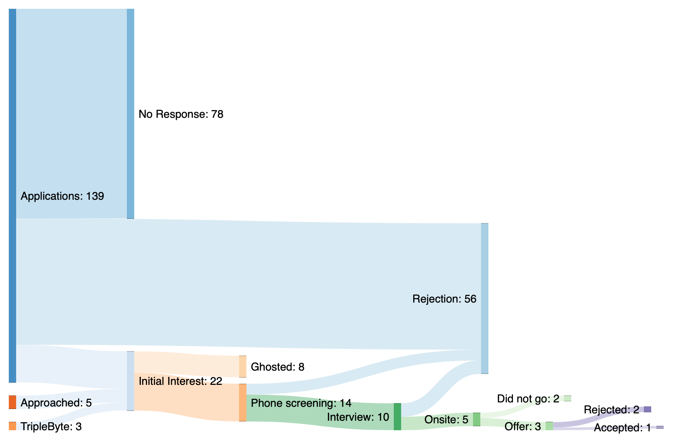

Finding a Job
At the end of 2019, over the span of a couple of weeks, I suddenly found myself without a house, without a partner and without a job. The next day I had a one-way ticket from Australia to Europe, where my family lives, and resolve to find a job working abroad.
I have always wanted to work abroad, but life has a way of tying you to a place, whether that be family, a job, a relationship. My circumstances were all coincidental, but together they offered something unique—freedom from being tied to a place.
Starting in December, I began applying for jobs. Most of these applications I sent were to the Who is Hiring? threads on Hacker News. I found my previous job here, and I find that a lot of the companies who post here are a better cultural fit for me than those who don't. (I also have an extreme distaste for LinkedIn, and after begrudgingly reactivating my profile there I got nothing except for a huge uptick in spam in my inbox).
All in all, I spent 3 months applying for jobs. Here's a breakdown of my applications:
The majority of my applications were flat out rejections. This wasn't helped by the fact that as a foreigner I also need a visa to work. This is especially true in the US where H1-B visas are notoriously difficult to obtain. I would often be flat-out rejected even though as an Australian I was eligible for the much easier E-3 visa.
Even worse than the rejections were the lack of responses. It was particularly demoralising to spend a lot of time on an application only to receive silence. I would like to think that if a company is looking for a candidate they should at least reply with a rejection out of respect.
By the end of January, I had not had many positive responses at all. I think this was probably due to December and January being not particularly good times to be applying for a job (who wants to be looking for new hires with Christmas around the corner?). I was feeling the pressure because I only had 90 days I could stay in the EU without a visa. I decided to start branching out and looking at an agent, or someone who could help find me a job.
I saw a link to Triplebyte on Hacker News and decided to give it a go. It's a site for vetting candidates technically so it doesn't have to happen for every application.
I went into it not expecting much, but was pleasantly surprised by the process. As someone who is self-taught, interviews that are heavily focused on data structures and algorithms can be very difficult. Triplebyte seems to focus less on this, and I was accepted into the program.
In the end, I got 3 onsites. 2 in San Francisco, and 1 in Munich. One in SF was from one of the three companies who contacted me through Triplebye, and the other two were from my own applications. I got offers from all 3 and went with the offer from Triplebye. I'll be starting there soon.